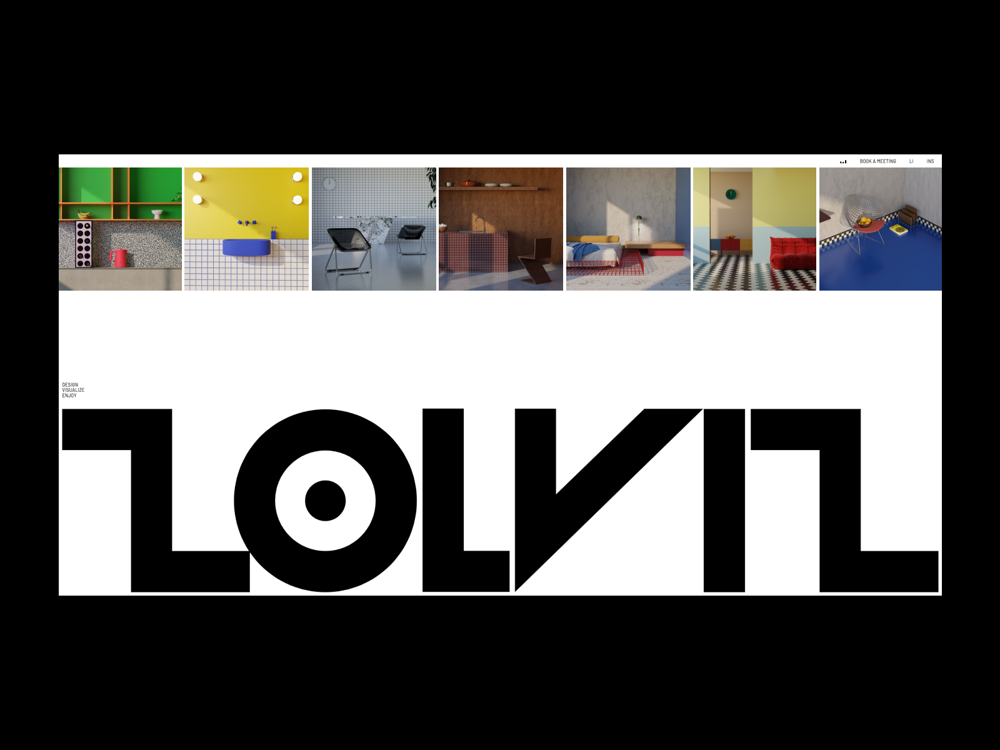
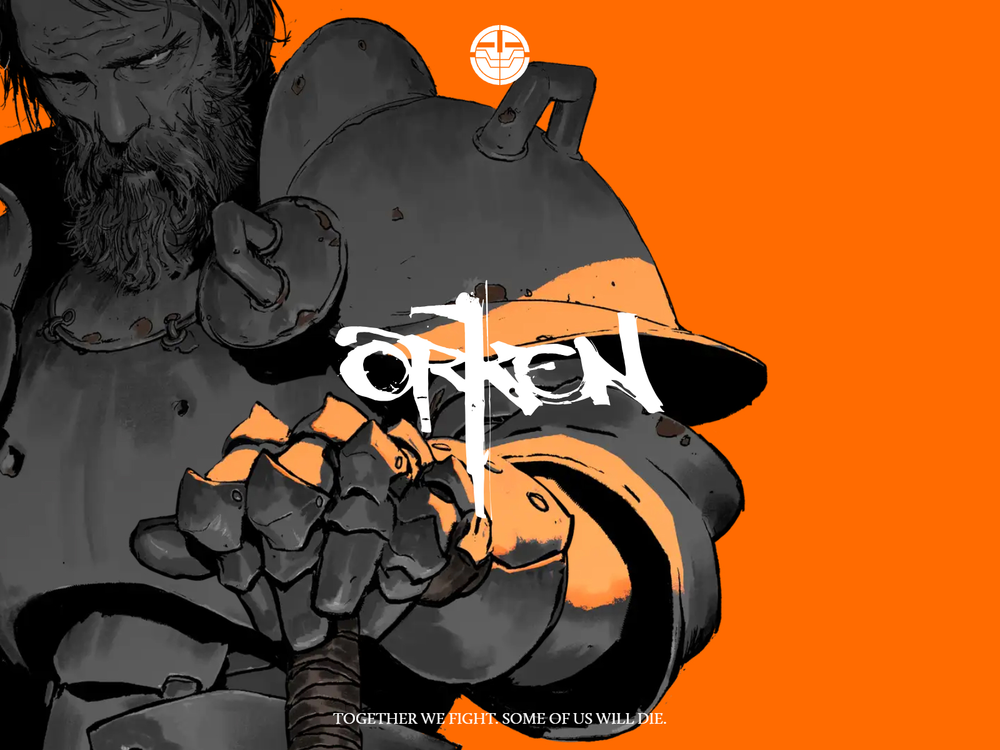
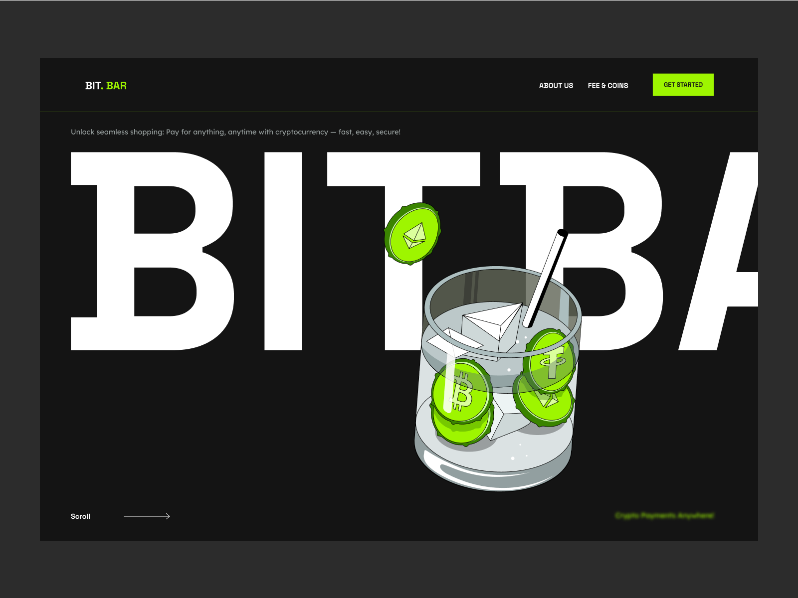
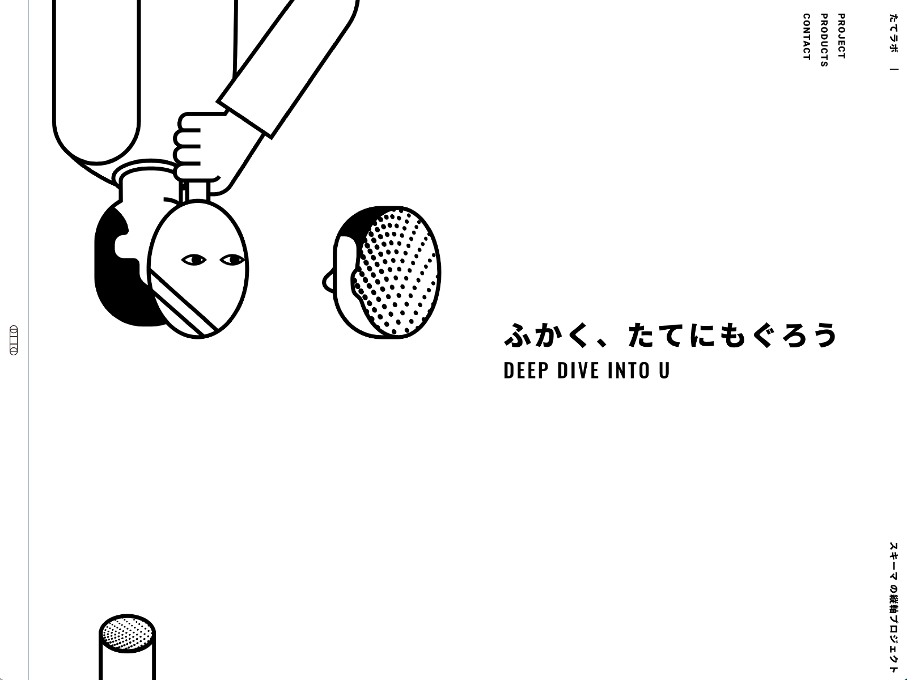
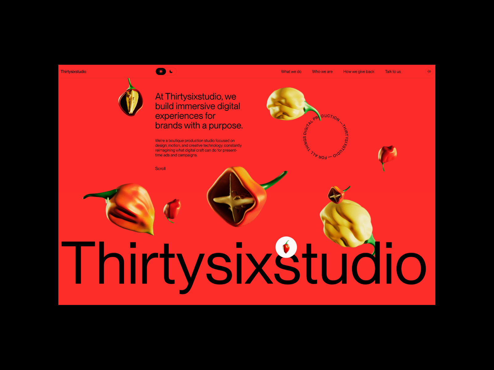
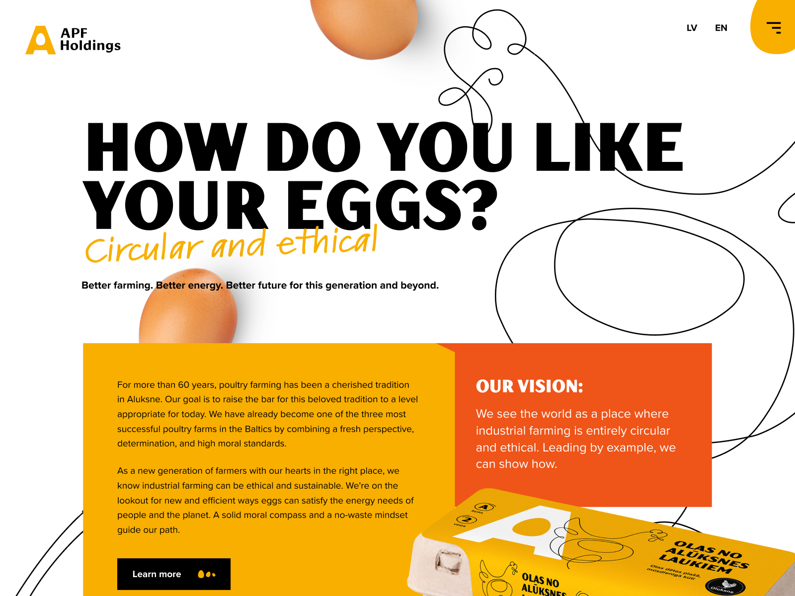
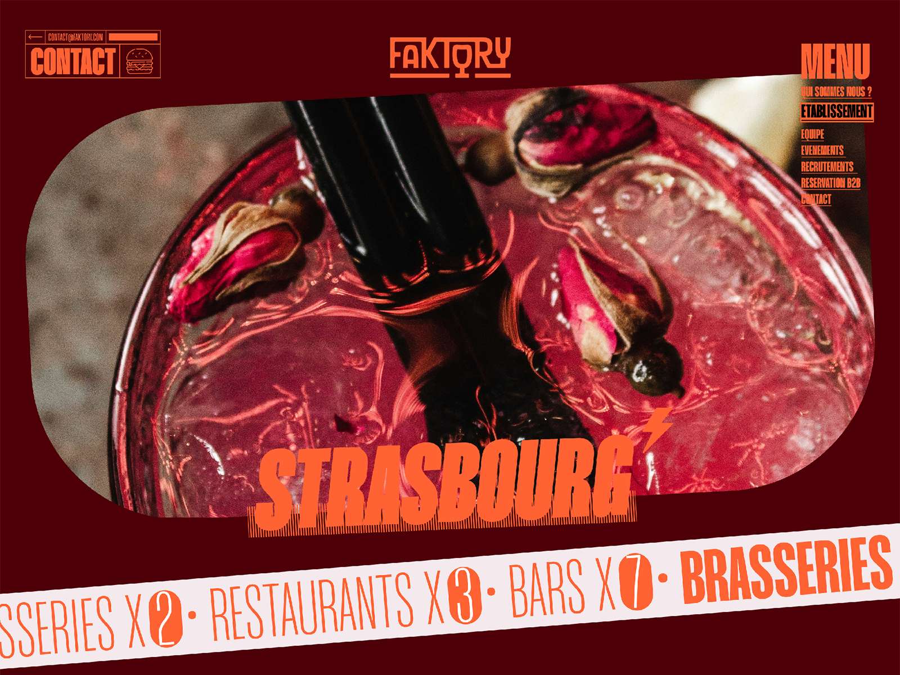
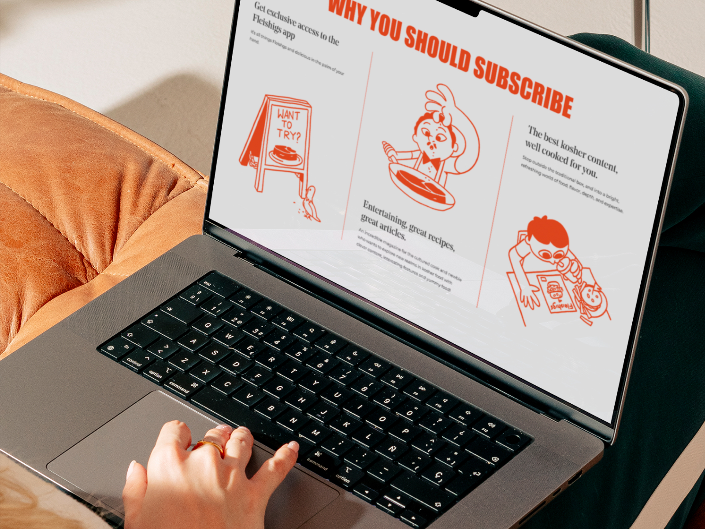

TOP WEBS POR AWWWARDS
Las webs nominadas en los Awwwards destacan en aspectos como la tecnología, la narrativa, la experiencia de usuario y el diseño. Estos aspectos reflejan las innovaciones utilizadas en las mejores plataformas digitales del momento.
A continuación, se muestra un análisis de algunas de las mejores webs según las siguientes categorías:
-
Arquitectura
- The McBride Company: destaca por su diseño profesional y sencillo, con una navegación fácil que permite explorar su portafolio de proyectos. Las imágenes seleccionadas realzan la creatividad de la agencia, reforzando su reputación en la creación de experiencias inmersivas.

- Título:
The McBride Company Creative Interior Design Agency
- Diseñador web: Paper Tiger
-
Pincha aquí
- zolviz.xyz: se caracteriza por un diseño moderno y visualmente atractivo, enfocada en ofrecer servicios de diseño de interiores en 3D. Es intuitiva, con imágenes de alta calidad que permiten a los usuarios visualizar sus espacios renovados de manera realista. Su estructura clara facilita la personalización de los proyectos, haciéndola ideal para quienes buscan mejorar sus interiores de forma precisa y estilizada.

- Título:
zolviz - Transform Your Space with Expert 3D Room Design
- Diseñador web: davidbastian
-
Pincha aquí
- Memphis Milano: refleja el carácter audaz y distintivo de la marca, con un diseño vibrante que captura la esencia de su enfoque radical. Resalta la estética colorida y extravagante del movimiento Memphis, mostrando sus piezas icónicas y su influencia perdurable en el diseño contemporáneo.

- Título: Memphis Milano
- Diseñador web:Nicholas Ruggeri, alessio-abrate, Blendmodes y Luca De Blasio
-
Pincha aquí
- Pesquera Diez (P10): sobresale por su diseño limpio y minimalista. Con un uso destacado de la fotografía arquitectónica y un vibrante color amarillo, el sitio refuerza la identidad de la marca y refleja su enfoque innovador y preciso en el diseño arquitectónico.
.jpg)
- Título:
Pesquera Diez | Arquitectura con propósito
- Diseñador web:
Mubien, Workshop Built y CSS_killer
- The McBride Company: destaca por su diseño profesional y sencillo, con una navegación fácil que permite explorar su portafolio de proyectos. Las imágenes seleccionadas realzan la creatividad de la agencia, reforzando su reputación en la creación de experiencias inmersivas.
-
Ilustración
- Orken: destaca por su diseño atractivo y moderno, enfocado en el género de fantasía. Su interfaz interactiva permite a los usuarios explorar narrativas a través de imágenes y videos impactantes. Además, incluye enlaces a diversas plataformas, promoviendo la participación de la comunidad y enriqueciendo la experiencia del usuario.

- Título: ORKEN
- Diseñador web:
Spatzek Studio y Daniel Spatzek
-
Pincha aquí
- Ninety Nine Street: se caracteriza por un diseño atractivo y creativo, centrado en la sostenibilidad. Presenta elementos interactivos, como el cambio de luz que simula el paso del día, lo que la hace innovadora. En conjunto, combina un mensaje ambiental fuerte con un diseño cautivador.

- Título: Welcome to Ninety Nine Street!
- Diseñador web:
nimblnz
-
Pincha aquí
- None Of Your Business: destaca por su diseño moderno y funcional, enfocado en la protección de la privacidad digital. Combina un diseño atractivo con una clara misión de salvaguardar los datos personales.

- Título:
NONE OF YOUR BUSINESS
- Diseñador web: Kalinkina Sofya
-
Pincha aquí
- BIT.BAR: presenta un diseño moderno y funcional que se centra en la usabilidad y la accesibilidad. Su interfaz intuitiva permite a los usuarios navegar de manera fluida y acceder rápidamente a las herramientas necesarias para las pruebas de aplicaciones. Además, la estética es limpia y profesional.

- Título: BitBar
- Diseñador web: Emote
- Orken: destaca por su diseño atractivo y moderno, enfocado en el género de fantasía. Su interfaz interactiva permite a los usuarios explorar narrativas a través de imágenes y videos impactantes. Además, incluye enlaces a diversas plataformas, promoviendo la participación de la comunidad y enriqueciendo la experiencia del usuario.
-
Experimental
- Retro Demo Machine: ofrece a los usuarios la posibilidad de explorar videojuegos retro a través de una interfaz que simula una máquina de demostración. Permite iniciar juegos al hacer clic en los cartuchos, brindando una experiencia nostálgica y accesible para los amantes de los clásicos. Su diseño simple facilita la navegación y mejora la interacción con el contenido retro.

- Título: Retro Demo Machine
- Diseñador web:
Gal Shaya
-
Pincha aquí
- The Bettering Company: se caracteriza por un diseño atractivo y funcional que refleja su enfoque en la sostenibilidad y la calidad de sus productos de cannabis. Su navegación es intuitiva, lo que permite a los usuarios acceder fácilmente a la información sobre sus productos.

- Título: The Bettering Company
- Diseñador web:
Basilico
-
Pincha aquí
- TATELab.: su diseño es atractivo y funcional, lo que facilita la navegación por sus diferentes secciones, como talleres y proyectos.

- Título:
五感拡張型クリエイティブ制作室「TATELab.（たてラボ）」
- Diseñador web: schema-inc
-
Pincha aquí
- Thirtysixstudio: se caracteriza por su diseño minimalista y elegante, con suaves efectos de desplazamiento y animaciones que mejoran la experiencia de navegación. Ofrece un modo claro/oscuro y un "Easter egg" interactivo con ilustraciones 3D animadas, lo que añade un toque creativo y dinámico a la página.

- Título: Thirtysixstudio
- Diseñador web:
Thirtysix studio, Clément Grellier y Clement Pavageau
- Retro Demo Machine: ofrece a los usuarios la posibilidad de explorar videojuegos retro a través de una interfaz que simula una máquina de demostración. Permite iniciar juegos al hacer clic en los cartuchos, brindando una experiencia nostálgica y accesible para los amantes de los clásicos. Su diseño simple facilita la navegación y mejora la interacción con el contenido retro.
-
Comida y bebida
- APF : cuenta con un diseño limpio y funcional que permite una fácil navegación para acceder a información sobre sus productos avícolas. Utiliza imágenes de alta calidad y enfatiza su compromiso con prácticas sostenibles y el bienestar animal.

- Título: Aluksne Poultry Farm
- Diseñador web:
DigiComm
-
Pincha aquí
- La Planque: se caracteriza por un diseño acogedor y minimalista que refleja el espíritu del restaurante en Limoilou, Québec. Su estructura clara facilita la navegación, con secciones organizadas que incluyen el menú y opciones de reserva en línea.

- Título: La Planque: Venez vous planquer, la porte est ouverte
- Diseñador web:
DACTYLO
-
Pincha aquí
- Faktory: se distingue por un diseño atractivo y limpio que resalta su enfoque creativo y estratégico. Ofrece una navegación fluida, permitiendo a los usuarios explorar sus diversos servicios, que incluyen branding y producción de video.

- Título: Faktory - Créateur de lien social
- Diseñador web: Izhak PRO, A./CHEN y Joffrey Spitzer
-
Pincha aquí
- FLEISHIGS: presenta un diseño claro y fácil de usar, dirigido a los aficionados de la cocina kosher. Está diseñada para ser accesible tanto a cocineros experimentados como a principiantes, facilitando el acceso a contenido de calidad y diverso.

- Título: Fleishigs - Homepage Design
- Diseñador web: widelab.co, Grzegorz Leśniewicz y mannsalesco
- APF : cuenta con un diseño limpio y funcional que permite una fácil navegación para acceder a información sobre sus productos avícolas. Utiliza imágenes de alta calidad y enfatiza su compromiso con prácticas sostenibles y el bienestar animal.